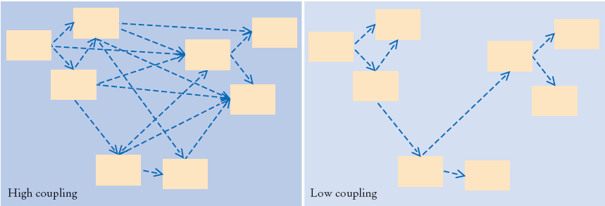
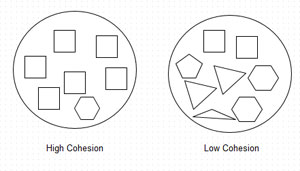
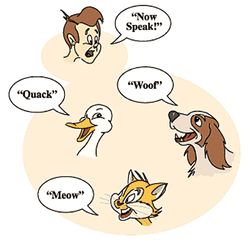
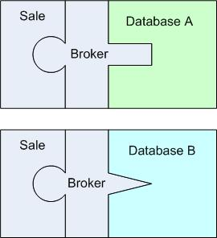

GRASP Design Principles
Presented by Diana Southard
CSCI 5448, Fall 2015
Table of Contents
- Introduction
- Why GRASP?
- GRASP Principles
- GRASP v GOF Patterns
- Conclusion
- Sources
Introduction
GRASP stands for:
General Responsibility Assignment Software Principles/Patterns
The GRASP patterns are a learning aid to help understand essential object design by applying design reasoning in a methodical, rational, and explainable way. They offer a guidelines for how to assign responsibility to classes and objects in object-oriented design.
“The critical design tool for software development is a mind well educated in design principles. It is not the UML or any other technology" (Craig Larman, "Applying UML and Patterns")
Why Grasp?
GRASP princples are a philosophy of design, not a one-fit solution to any specific problem. In order to properly use the GRASP principles, you need to understand the problem that you're facing in your specific design and use the GRASP guidelines for imagining and designing a robust solution.
Following the GRASP principles can lead to improved designs and architectures.
GRASP Principles
There are nine core principles:
• Low Coupling • High Cohesion • Information Expert • Creator • Controller • Polymorphism • Indirection • Pure Fabrication • Protected Variations •
1: Low Coupling
Problem
How to reduce impact of changes and encourage reuse?
Coupling: the manner and degree of interdependence between software modules.
Solution
Assign responsibility so that coupling remains low.
Approach:
- Closely look for classes with many associations to other classes.
- Look for the methods that rely on a lot of other methods (or methods in other classes i.e. dependencies).
- Rework the design so as to assign responsibilities to different classes in such a way that they have lesser association and dependency.
Benefits:
- Maintainability: Little or no affect on the module by changes in other components.
- Easy to understand.
- Improved Reusability: convenient to reuse and easier to grab hold of classes.
Liabilities:
- Coupling to stable elements (classes in library or well tested classes) doesn’t account to be a problem.
2: High Cohesion
Problem
How to keep classes focused and manageable?
Solution
Assign responsibility so that cohesion remains high.
Approach:
- Closely look for classes with probability of many responsibilities i.e. classes with too-few or disconnected methods.
- Look for the methods which do a lot (look for method names having words like “AND”, “OR”).
- Assign a responsibility in such a way that all the responsibilities in a class are related.
Benefits:
- Clarity and ease of understanding design is increased.
- Maintenance and enhancements are simplified.
- Low coupling is often supported.
- Small size classes with highly related functionality increases reuse.
Liabilities:
- In scenarios of server objects, it would be desirable to have less cohesive server objects due to performance needs. Remote objects and remote communication are the examples where performance matters than anything else. In this case, an interface provided for many operations would be recommended than having highly cohesive but different interfaces/ components.
3: Information Expert

Problem
Any real world application has hundreds of classes and thousand of actions. How do I start assigning the responsibility?
Solution
Assign a responsibility to the Information Expert, the class that has information necessary to fulfill the responsibility.
Approach:
- State the responsibility clearly.
- Search for the classes who have the information needed to fulfill the responsibility.
- Assign the responsibility.
This will lead to placing the responsibility on the class with the most information required to fulfill it.
Benefits:
- Encapsulation is maintained as objects use their own data to fulfill the task.
- Supports low coupling
- Behaviour (responsibility) is distributed across the classes that have the required information thus encouraging highly cohesive lightweight classes.
Liabilities:
- Sometimes while assigning responsibilities, lower level responsibilities are uncovered.
4: Creator

Problem
Who creates the new instance of some class?
Solution
Assign class A the responsibility to create an instance of class B if:
- A aggregates (whole-part relationship) B objects,
- A contains B objects,
- A records instances of B objects,
- A closely uses B objects, OR
- A has initializing data that is needed while creating B objects (thus A is an expert with respect to creating B).
Approach:
- Closely look at domain/ design model and ask: who should be creating these classes?
- Search for the classes who create.
- Assign the responsibility of creation.
Benefits:
- Supports low coupling.
- The responsibility is assigned to a class which fulfills the criteria, separating the logic for creation and actual execution.
Liabilities:
- Sometimes creation may require significant complexity. Many times there is tight coupling between the creator and created class. Also the task of destroying the objects might need to be taken into account. Pooling such instances becomes important for the performance reasons.
5: Controller
Problem
Who should be responsible for handling a system event?
Solution
Assign the responsibility for handling a system event message to a class representing one of the following:
- A class that represents the overall system, device, or sub-system (facade controller).
- A class that represents a use case within which the system event occurs (a session controller or use case controller).
- Represents the overall business (facade controller).
- Represents something in real world that is active (role controller).
Approach:
- Closely look at domain/design model to find when you have family of classes doing work/job pertaining to some specific function and would need some facilitator
- Add a new class to take the responsibility of controller or manager, where all client code would access the functionality through this class.
Benefits:
- Supports low coupling.
- Promotes understandability and maintainability.
Liabilities:
- Sometimes grouping of responsibilities or code into one class or component to simplify maintenance occurs when controllers are designed. This should be avoided as it would become bloated controllers.
Bloated Controller: controllers which handle too many system events leading to low cohesion. This can be avoided by addition of a few more controllers.
6: Polymorphism
Problem
How to handle alternatives based on type? How to create pluggable software components?
Solution
Assign responsibility for the behaviour (using polymorphic operations) to the types for which the behaviour varies.
Approach:
- Identify classes/ types which would have the behaviour changing slightly.
- Look for the methods which use conditional statements.
- Assign a responsibility to a type for which the behaviour varies.
Benefits:
- Unknown extensions required for new variants are easy to add.
- Maintenance and enhancements are simplified.
Liabilities:
- Code that is initially simple may become unnecessarily complex.
7: Indirection

Problem
How to combine low coupling and high potential for reuse?
Solution
Assign the responsibility to an intermediate object to mediate between other components or services so that they are not directly coupled.
Approach:
- Closely look at domain/ design model and locate the classes with low coupling or direct coupling.
- Use an existing class to take the responsibility of functionality causing low coupling and also the functionality has high potential for reuse.
Benefits:
- Supports Low Coupling.
- Results in high reusability.
Liabilities:
- Sometimes such design may result into bunch of classes having a single method which is a kind of overkill.
8: Pure Fabrication
Problem
Who should be responsible when an expert violates high cohesion and low coupling?
Solution
Assign the responsibility for handling a system event message to a class which is new, fictitious, (artificial) and doesn’t represent a concept in domain.
Approach:
- Closely look at domain/ design model and locate the classes with low cohesion and high coupling.
- Create a new class to take the responsibility of functionality causing low cohesion and high coupling.
Benefits:
- Supports Low Coupling.
- Results in high cohesion.
- Promotes resuability.
Liabilities:
- Sometimes such design may result into bunch of classes having a single method which is a kind of overkill.
9: Protected Variations

Problem
How should responsibilities be assigned in such a fashion that the current or future variations in the system do not cause major problems with system operation and/or revision?
Solution
Assign responsibilities to create stable interfaces around current and future variations.
Approach:
- Closely look for elements with direct coupling and also relatively prone to change.
- Identify for the objects or points of predicted variation.
- Assign these responsibilities in such a way to create a stable interface around them.
Benefits:
- Extensions required for new variations are easy to add.
- New implementations can be introduced without affecting clients.
- Coupling is lowered.
- The impact or cost of changes can be lowered.
Liabilities:
- The design cost of speculative “future-proofing” i.e. protecting from future variations at evolution point may outweigh the design cost incurred by a simple design that is reworked as necessary. Evolution point is a speculative point of instability or variation that may arise in future, but not specified in current requirement. This means sometime a simple design with no PV can cost a lot less in the current time and this can be reworked when future variation becomes reality.
GRASP v GOF Patterns
The many different GOF Patterns that we've seen in class are all tied to specific, recurring problems that developers face when creating software. In this way, you can use the patterns as a cheat sheet, looking up the exact answer to the problem you're currently facing.
GRASP principles, however, are not tied to any specific problems. The bad thing about that is that it's not as easy to find a solution to the exact problem you're facing. However, not being tied to a specific problem means that the GRASP principles are true in any design scenario.
In this comparision, it is easy to understand GRASP principles as the abstract, underlying principles of all the different GOF patterns.
Conclusion
Like the many GOF patterns we've covered in class, following the design patterns described by the GRASP techniques will result in highly maintanable, robust, and reusable systems.